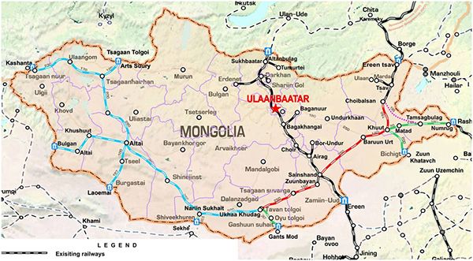

Arriving to Mongolia
MIAT (Mongolian International Air Transport) is Mongolia's national carrier and has a large network of domestic flights as well as international departures to Berlin, Moscow, Beijing, Tokyo, Seoul, Istanbul, Hohhot , Ulaan-Ud and Irkutsk. In the summer there are plans for further routes to Hong Kong, Singapore and Osaka. For flight schedule, check the official MIAT's website: www.miat.com Aeroflot Russian International Airlines, Korean Air, Air China and Turkish Airlines also have international routes to and from Ulaanbaatar.
Welcome to Chinggis Khaan International Airport, the Triumphal Gate of Mongolia and its capital Ulaanbaatar

Every single person who travels to Ulaanbaatar, Mongolia by air including all the high ranked government officials from other countries, tourists, businessmen and all domestic-destination travelers passes through Chinggis Khaan International Airport. Chinggis Khaan International Airport alike many airports around the world runs all types of operations and services available for 24 hours a day. In accordance with the ICAO standards the Airport has 4D-category aerodrome able to handle aircraft of all models, all necessary ground handling equipment and facilities. Our primary goal is to meet every single passenger with the Mongolian traditional hospitality and to provide a Customer with high quality services while creating the most secure comfortable environment for the traveling public. Thank you for being served at Chinggis Khaan International Airport.
Railway Network
A simple way of expedition-transportation to Mongolia for visitors is travel by Trans Siberian Railway, which stretches from Russian borders via Ulaanbaatar to the Chinese borders. Exploring Mongolia following the rail lines of the legendary Trans Mongolian and Trans Siberian Railways is more than a simple way of transportation, it is an expedition in itself. Total distance by rail from Beijing to St Petersburg is 7,925 km. Travelers can join in Moscow (or St Petersburg) or in Beijing (or Hong Kong and Hanoi). There are usually nine compartments in each carriage with four berths in each (Twin share rail compartments are available for a supplementary price). See for timetable at www.mtz.mn. Contact to ubirtc@railcom.mn.